Яма — какой должна быть игра: доска примеров v1
04.11.2026 · концепты нарисовал генератор Codex по описи экранов; образец композиции — настоящий кадр игры (№1) и проба (№0).
5 — утки и Яма да, 8 — лента да, HUD нет, 9 — нет совсем. Из того, что понравится, я соберу одну целевую картинку «вот такая игра». Ты её смотришь и правишь, и только после твоего «да» мы делаем ассеты и 3D. Тап по картинке открывает её целиком.Примеры

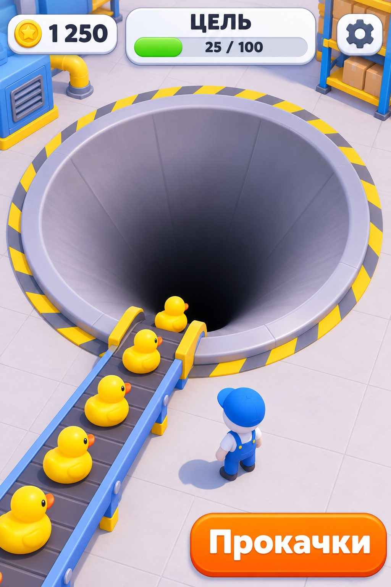
Тебе понравилось: единый стиль, лента с бортами и опорами.

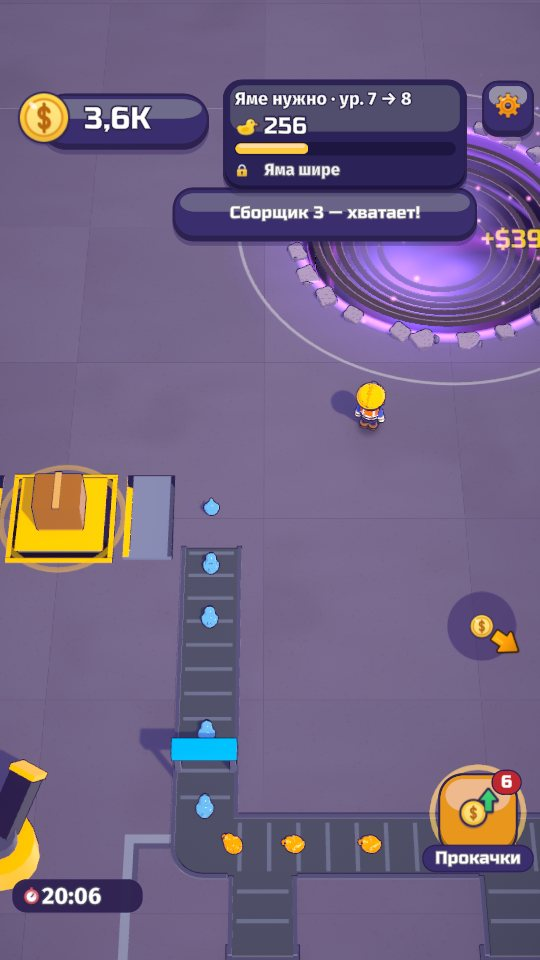
Кадр игры, середина главы I. Образец композиции для всех концептов.

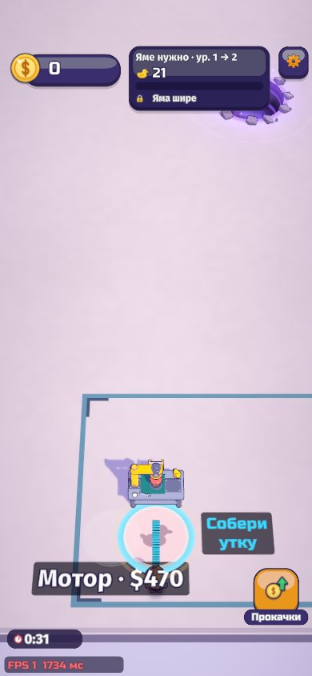
Кадр с телефона 390 px.

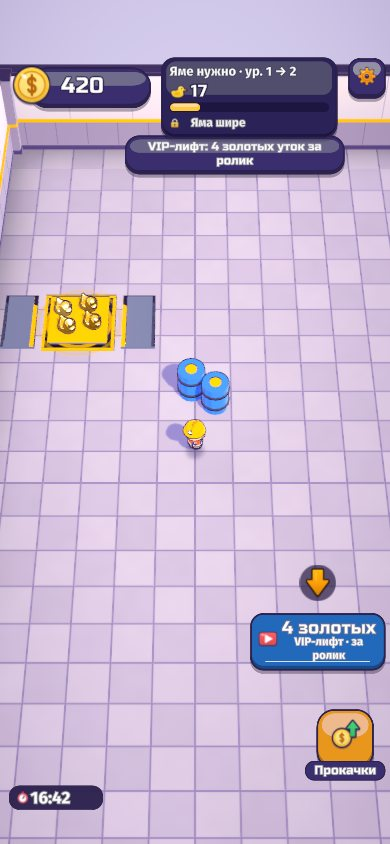
Кадр с телефона 390 px.

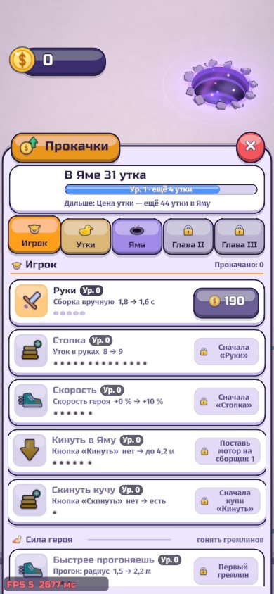
Кадр с телефона 390 px.

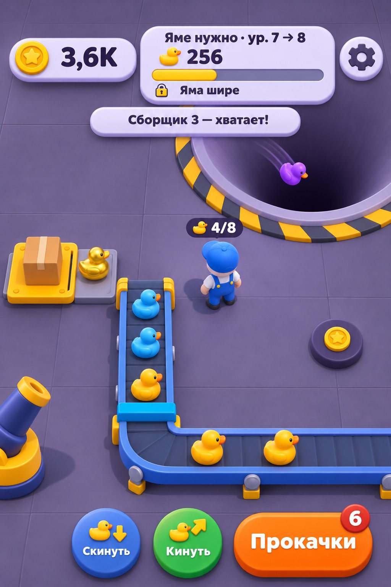
Как проба, но на тёмном полу: матовый винил без обводок, глубокая воронка с жёлто-чёрной кромкой, светлые плашки HUD.

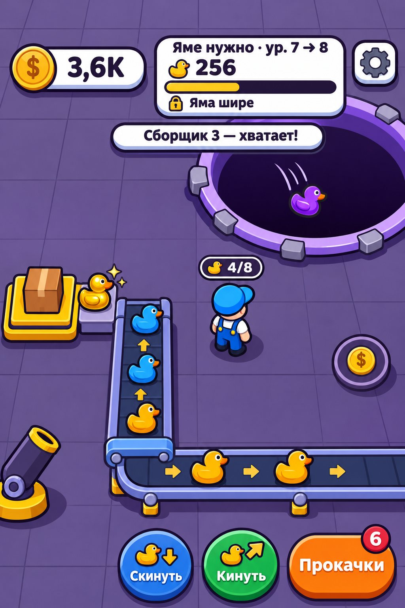
Плоский цвет, тёмная обводка, жёсткая тень, фиолетовый обод Ямы, стрелки на ленте. Проще всех повторить в Unity.

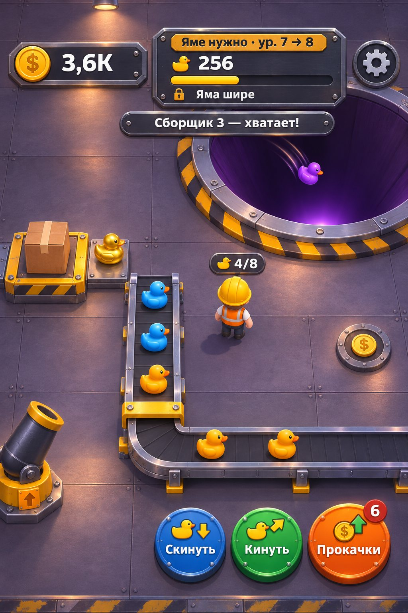
Крашеная сталь, заклёпки, тёплые лампы на холодном фоне, лента на оцинкованной раме. Самый тяжёлый для веба.

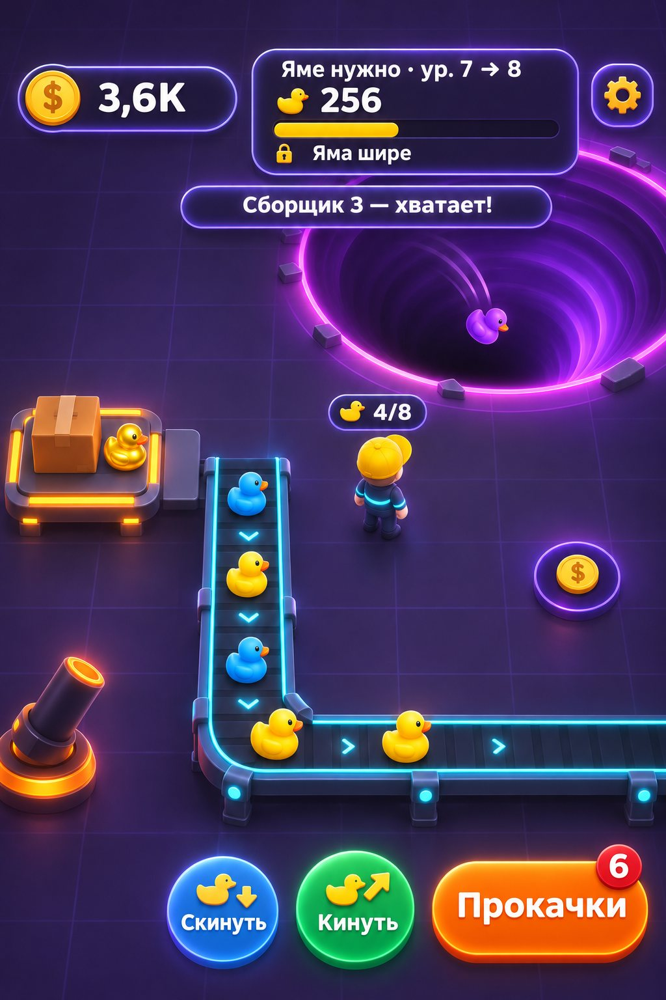
Почти чёрный пол, свет от Ямы и бирюзовых направляющих ленты, стеклянный HUD. Риск: мелкий текст на стекле.

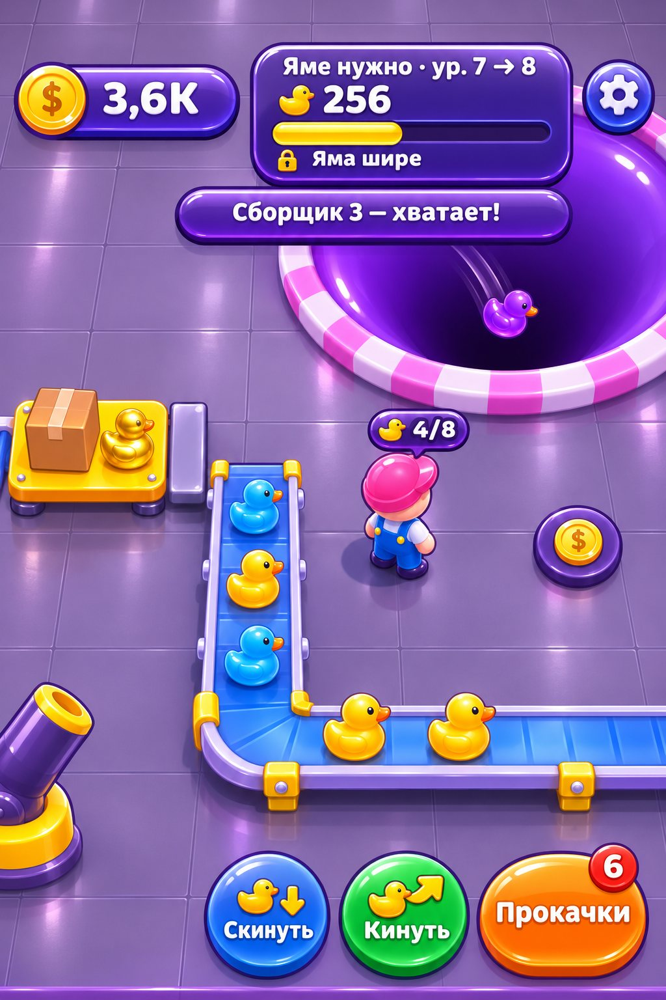
Глазурь, пилюльные кнопки, большие блики. Риск: перегруз и «детскость».

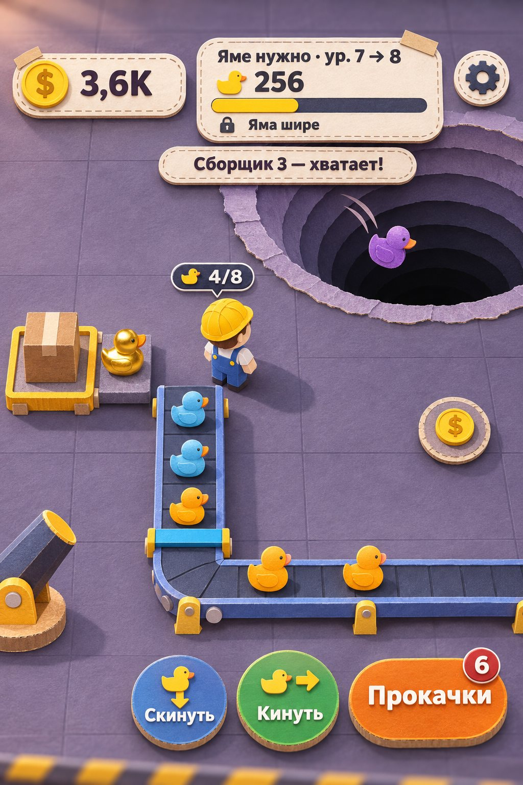
Бумага и картон, Яма слоями, лёгкий эффект миниатюры.

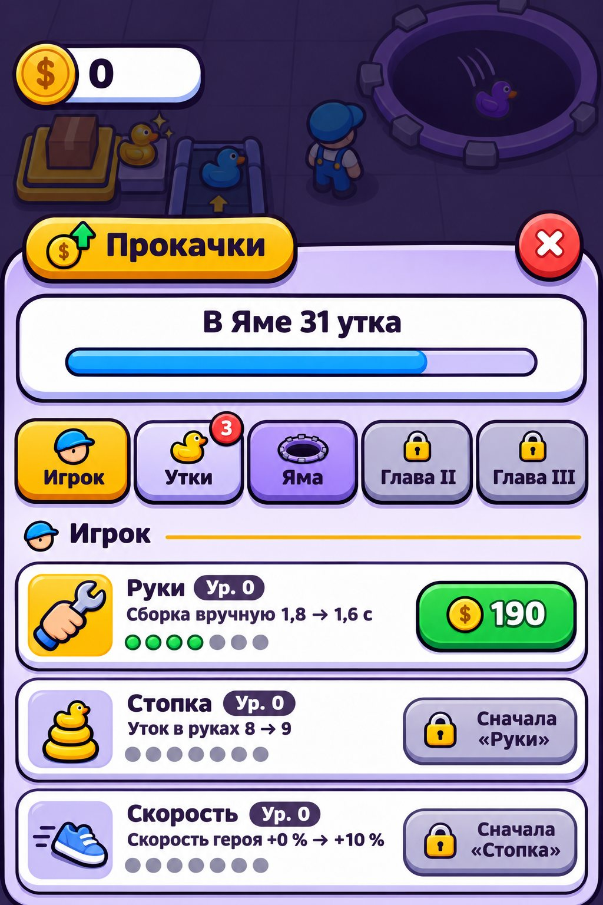
Светлые карточки, толстая обводка.

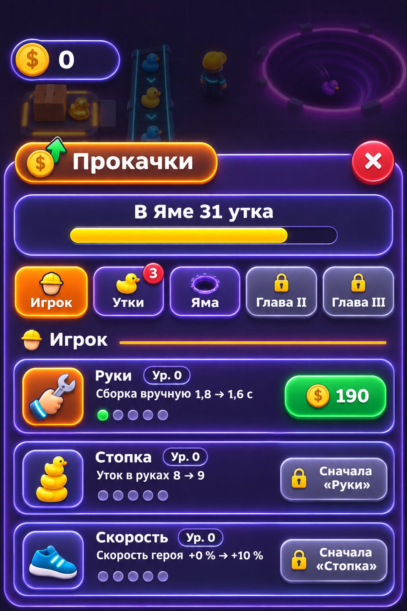
Тёмное стекло и свечение.
Второй глаз — Argon
Вердикт: все 8 концептов сильно лучше нынешнего кадра (№1). Мир цельный, лента с бортами и опорами, утки и герой крупные. Кириллица везде без ошибок.
Топ-3: 1) смесь №5 + №6 и лист №11: объём и золото из №5, обводка и белые плашки из №6; 2) №6 как есть: лучше всех читается на телефоне и проще всех в Unity; 3) №7 как донор деталей: пушка, стальная Яма со свечением на дне.
Что откуда брать: утки — №5 с обводкой из №6 · Яма — №6 (фиолетовая) или №7/№5 (заводская воронка) · лента — корпус из №5, стрелки из №6/№8 (по ходу к Яме) · пушка — №7 · герой — №5/№6 (синий, не жёлтый) · пол — №5/№6 · HUD — №5/№6 · кнопки — №5/№6, значок на «Прокачках» из №7 · лист «Прокачки» — №11.
Слабые: №9 (блики спорят с текстом, «конфетно», не цех) и №10 (рябь бумаги, тяжёлое размытие). У №7, №8, №10 герой в жёлтой каске и сливается с утками.
Полный разбор с баллами — design/ui-concept/concepts/argon-review.md (локально).
Вопросы к тебе по описи экранов
Без ответа рисую как сейчас в игре.
- Цвет активного баффа и вид стены «Ключ».
- Две цели с одинаковыми числами — плашка «Яме нужно» сверху и метка над Ямой: оставить обе (сверху «что нужно», в мире полоса уровня) или убрать числа с одной?
- Нижний ряд кнопок справа — оставить под правую руку?
- Вход в паки $: сейчас три тапа через чип дохода; нужна отдельная кнопка?
- Кнопку темы убрать из релиза, когда выберешь тему?
- Таймер плейтайма и плашку FPS в релизе оставить или убрать?
- «Новая игра» без подтверждения — добавить «точно?»
- Пушка: какую подпись и разброс показывать (п. 94).